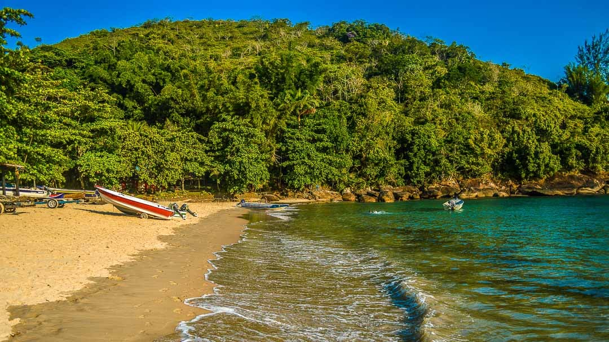
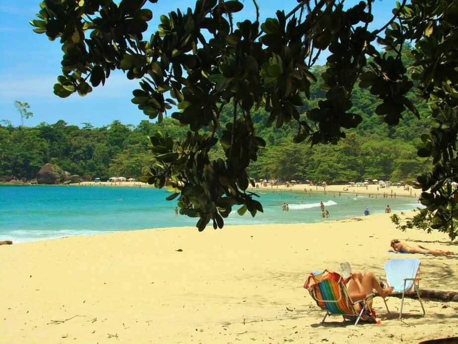
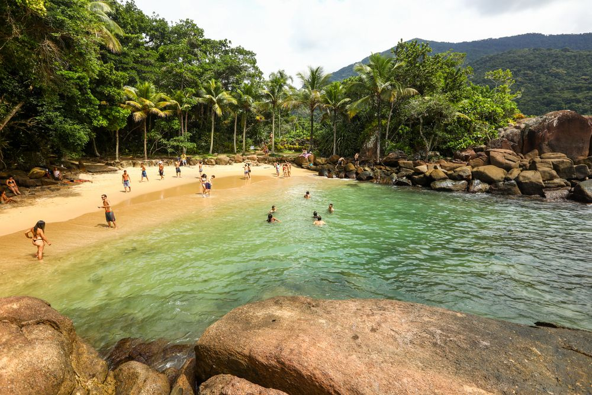

Praia do Bonete

A Praia do Bonete é acessível somente por embarcações ou pela Trilha das Sete Praias, que inicia na Fortaleza ou na Lagoinha. O acesso a partir da Praia da Lagoinha é bem mais curto, fácil e rápido.
Tem apenas um quiosque, que abre nos períodos mais movimentados, é boa para banho e frequentada basicamente por jovens.
Como chegar
O acesso é a partir da Praia da Lagoinha é bem mais curto, fácil e rápido.
Praia do Félix

A Praia do Félix está entre as mais populares de Ubatuba e oferece mar transparente, muita sombra e boa infraestrutura para passar o dia.
Como Chegar
A praia do Félix fica no norte de Ubatuba. A entrada está localizada na altura do 33 da Rodovia Rio-Santos. O acesso principal é pelo condomínio
Praia de Português

A Praia do Português, também conhecida como Prainha do Félix, muitas vezes passa despercebida pelos turistas. Essa pequena faixa de areia está escondida por uma trilha de pedras à direita da Praia do Félix e é imperceptível para quem não a conhece.
Como chegar